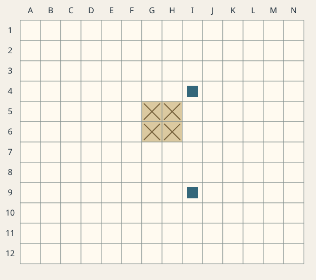

Одинаковые правила, разная история
Все карты совпадают с сеткой нативного пакета: 14 × 12, клетка — 5 футов. G5/H5/G6/H6 — трудная местность; I4/I9 — половинное укрытие. Остальные детали описания декоративны, пока ведущий не изменил поле штатно.
Расстановка и параметры
Герои по порядку: B3, B4, B5, B6, C3, C4, C5. Противники: L3, L4, L5, L6, M3. Используйте только нужное число фигур.
Для 3 / 4 / 5 / 6 / 7 игроков: 2 / 3 / 3 / 4 / 5 противников, здоровье каждого 12 / 14 / 16 / 18 / 20. Защита 12; скорость 20 футов; одна ближняя атака +3, 1d4+1 дробящего урона, досягаемость 5 футов.
Враги — простая поддерживаемая модель. Мирные решения и ограничения сцены описаны отдельно; ведущий подтверждает их результат. После первого раунда напомните пути переговоров или отступления. Встречи не запускаются автоматически.
Игра шагающих ширм
Только если герои добровольно выбирают практический проход между учебными ширмами Иры в вечере 1 или 4. Осмотр и разговор никогда не запускают встречу.
Цель и выходы
Провести пустую рамку к противоположному краю и показать выбранное окончание жеста, сохранив возможность отойти. Можно выйти через западный край, прекратить упражнение или уступить ширмам; победа в бою не даёт перевода языка.
Ира прекращает упражнение по явному сигналу любого участника. Можно попросить демонстрацию с пустыми моделями или спокойно обойти поле; это даёт тот же доступ к разговору и уликам.
Поведение противников
Исправная несознательная праздничная машинка на мягких ножках, закрытая полотном с нарисованной ладонью. Это тренировочная бутафория соларпанка, а не личность Сада.
Ширмы приближаются к ближайшему участнику и используют только одну обычную атаку мягкой перекладиной. Не захватывают, не толкают специальным действием и не преследуют ушедших. AC 12; одна атака ближнего боя +3, урон 1d4+1. Никаких автоматических таймеров.
Размер группы
3 игрока: 2 ширмы, по 12 HP. 4: 3 по 14 HP. 5: 3 по 16 HP. 6: 4 по 18 HP. 7: 5 по 20 HP. У всех AC 12 и одна атака +3, 1d4+1. На большом столе распределите показ жеста, наблюдение и сопровождение рамки; после круга действий вернитесь к общей цели.

↔ На узком экране прокрутите карту вбок. Полный размер доступен по ссылке ниже.

Поле 14×12, A–N и 1–12. Только G5, H5, G6, H6 — труднопроходимые клетки: мягкий тренировочный ковёр. Только I4 и I9 дают половинное укрытие: два штатных экрана. Остальные ленты, чаши и подпорки — декорация без дополнительных правил. Герои начинают B3,B4,B5,B6,C3,C4,C5 по составу; ширмы — L3,L4,L5,L6,M3 по числу. Западный край открыт для выхода.
Опора без догадки
Только после отдельного согласия Склада и героев на пробу его несознательных учебных опор в вечере 2 или 6. Отказ ведёт к настольному макету.
Цель и выходы
Добраться с моделью к восточной стороне, показать, кто кого поддерживает, и иметь возможность прекратить действие. Можно отступить к западному краю или попросить остановку; повреждение опор не является доказательством понимания.
Показать уже проверенный поперечный знак и отойти: Склад прекращает пробу. До старта можно заменить всё статичной моделью из лент; вопрос о субъекте остаётся тем же и не требует победы.
Поведение противников
Съёмная растительная конструкция без отдельной личности, которую Склад заранее предъявляет как свой инструмент. Перед контактом ведущий явно сообщает эту границу.
Опоры движутся к ближайшей модели и делают одну обычную атаку мягким отростком. Никакого опутывания, роста новых клеток или специальных реакций. AC 12; одна атака ближнего боя +3, урон 1d4+1. Склад не атакует и не считается общей целью с инструментами.
Размер группы
3 игрока: 2 опоры по 12 HP. 4: 3 по 14 HP. 5: 3 по 16 HP. 6: 4 по 18 HP. 7: 5 по 20 HP. Для всех AC 12, одна атака +3, 1d4+1. При 6–7 игроках пары по очереди показывают адресата и окончание; каждый сохраняет собственное право завершить участие.
↔ На узком экране прокрутите карту вбок. Полный размер доступен по ссылке ниже.

Поле 14×12, A–N и 1–12. Единственные труднопроходимые клетки G5, H5, G6, H6 обозначены мягким плетением. Единственные клетки половинного укрытия I4 и I9 — штатные экраны. Все другие корни, камни и листья декоративны, дополнительных правил не дают. Старт героев B3,B4,B5,B6,C3,C4,C5; опор L3,L4,L5,L6,M3 по составу. Отход через западный край свободен.
Репетиция с пустой площадкой
В вечере 7 герои сами выбирают подвижную репетицию вместо осмотра неподвижной модели. Это не нападение Сада и не обязательная проверка достоинства гостей.
Цель и выходы
Донести знак прекращения к краю модели и завершить упражнение по понятному сигналу. Можно отказаться от репетиции или отойти на запад; настоящая площадка с пассажирами остаётся за пределами боя.
Дина вручную завершает испытание по просьбе любого человека. Герои могут сразу выбрать неподвижный макет и показать сигнал на нём; Склад оценивает смысл ответа, а не количество побеждённых кукол.
Поведение противников
Небольшая городская кукла с мягкими лапами, которой мастера проверяют внимание участников. Она исправна, не обладает разумом и действует только внутри добровольной репетиции.
Испытатели подходят к ближайшему участнику и делают только обычную атаку мягкой лапой. Не меняют карту и не сбрасывают героев с высоты. AC 12; одна атака ближнего боя +3, урон 1d4+1. Условие остановки разыгрывает ведущий после явного сигнала, без нового автоматического механизма.
Размер группы
3 игрока: 2 испытателя по 12 HP. 4: 3 по 14 HP. 5: 3 по 16 HP. 6: 4 по 18 HP. 7: 5 по 20 HP. Общие AC 12 и одна атака +3, 1d4+1. На 3 игроках каждому доступен свой сигнал; на 4–7 меняйте первого показывающего и собирайте личные решения после репетиции.
↔ На узком экране прокрутите карту вбок. Полный размер доступен по ссылке ниже.

Поле 14×12: A–N, 1–12. Только G5, H5, G6, H6 являются труднопроходимыми клетками — складки мягкого покрытия. Только I4 и I9 дают половинное укрытие штатных экранов. Площадка, кукольные дома и цветы вне этих клеток служат декорацией без дополнительных эффектов. Герои B3,B4,B5,B6,C3,C4,C5; испытатели L3,L4,L5,L6,M3 по составу. Западный край — выход из пробы.